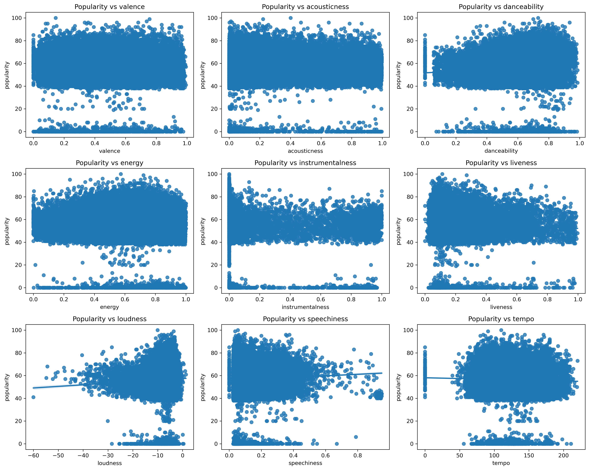

Spotify Song Popularity Analysis
Analyzed Spotify song data to understand which audio features are most related to song popularity.
More details
Problem
With so many different audio features available for songs, it can be difficult to understand what actually makes a song popular. The goal of this project was to identify which features have the strongest relationship with popularity.
Approach
I analyzed a dataset of Spotify songs using Python and pandas. I explored relationships between features such as energy, danceability, loudness, tempo, and valence using summary statistics and visualizations to identify patterns.
Results & Impact
The analysis showed that energy and danceability had strong positive relationships with popularity, while tempo and loudness had little effect. This helps highlight which characteristics are more important when predicting song success.